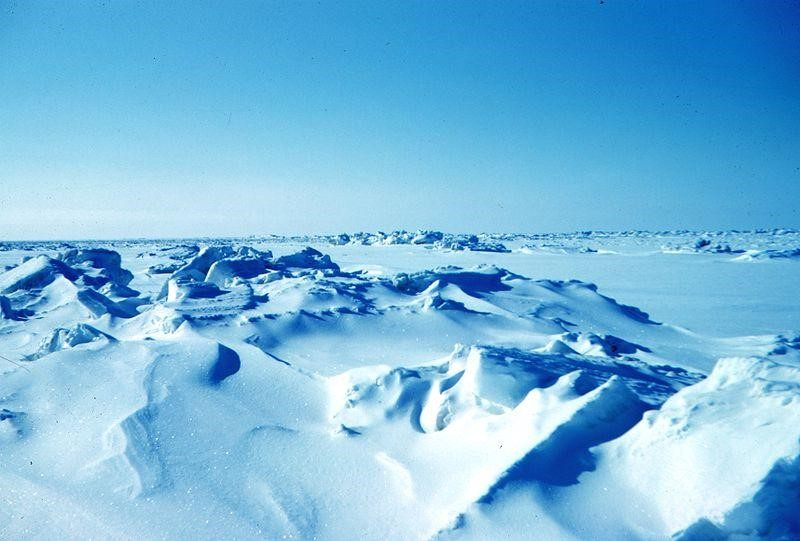

De forma natural han existido cambios radicales en el clima planetario debido a modificaciones en la rotación, en la órbita y en la inclinación de la Tierra, o por eventos naturales extraordinarios como las erupciones volcánicas.
El ejemplo más claro de esta modificación del clima son las glaciaciones, y se producen por el cambio en la forma de la órbita de la Tierra y de la inclinación del planeta con respecto a su eje.
Ahora nos encontramos en un periodo interglaciar (entre dos glaciaciones) y esa estabilidad del clima ha permitido el desarrollo y crecimiento de la civilización humana.

| ANT | SIG |
|---|